Merchantman is a trading ship capable of landing or docking and then inviting locals in to view what its cargo holds have to offer. It was purchased to expand TEBRIG services into outer systems.
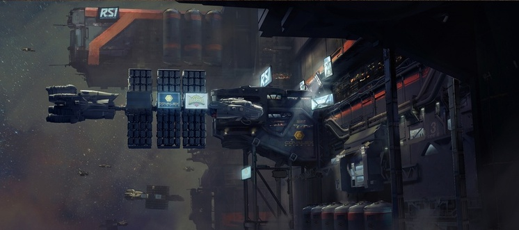
The Hull D is a large cargo freighter. Converted to its military variant shortly after it was converted it started being used for restocking the military part of TEBRIG.
The endeavor is a research platform, purchased for the use of a super collider to enhance TEBRIG's military abilities.
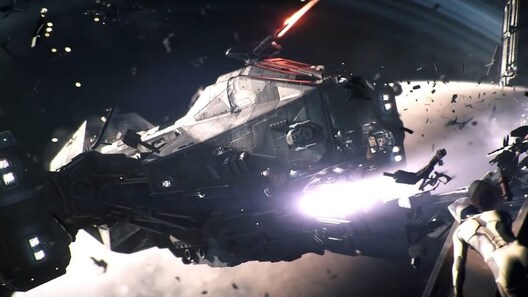
The Reclaimer is an industrial salvage ship. Used to reclaim the wrecks of our targets.
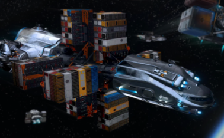
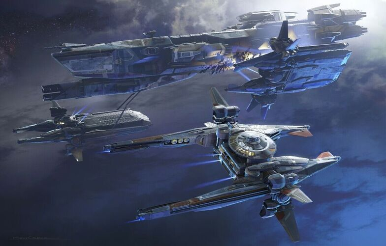
Purchased in the early 2700s to restock and repair other ships in the fleet.
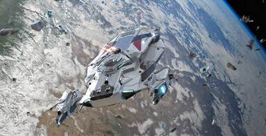
Apollo Medivac is a hospital or 'medical' ship constructed for Medivac (medical evacuation) and rapid emergency response, having provided critical aid to the known universe for over two centuries. Purchased to aid any rescue operations for our operatives.
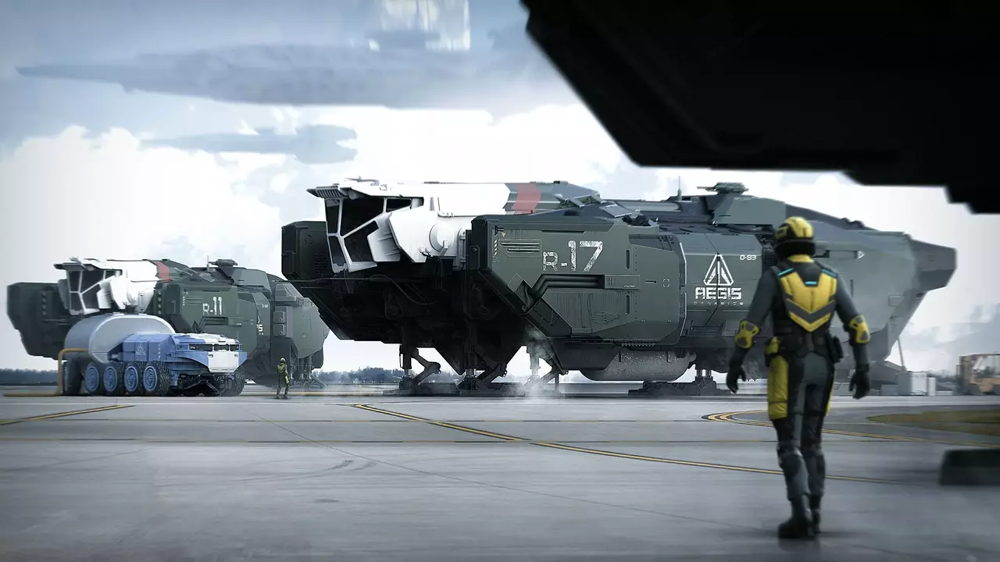
A medium repair/refuel ship. Purchased to aid in any small-medium repair/rearm operations.
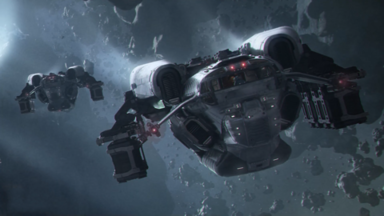
The expanse is a small refinery ship, purchased in the TEBRIG 2940 Expansion act.
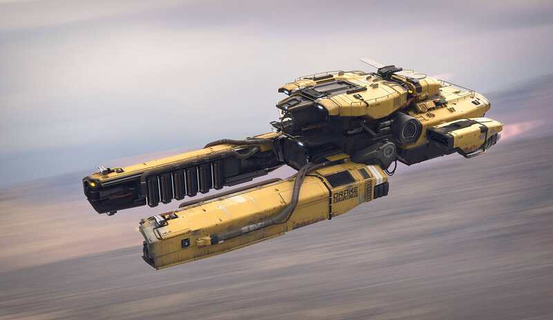
The vulture is a small salvage ship bought as part of the 2940 TEBRIG Expansion act.
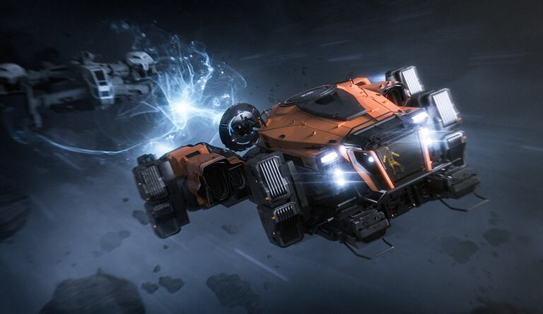
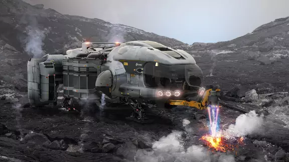
The prospector is a small mining ship bought as a part of the 2940 TEBRIG Expansion act.
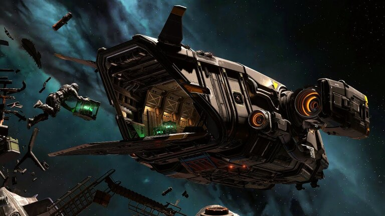
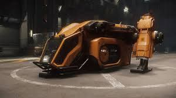